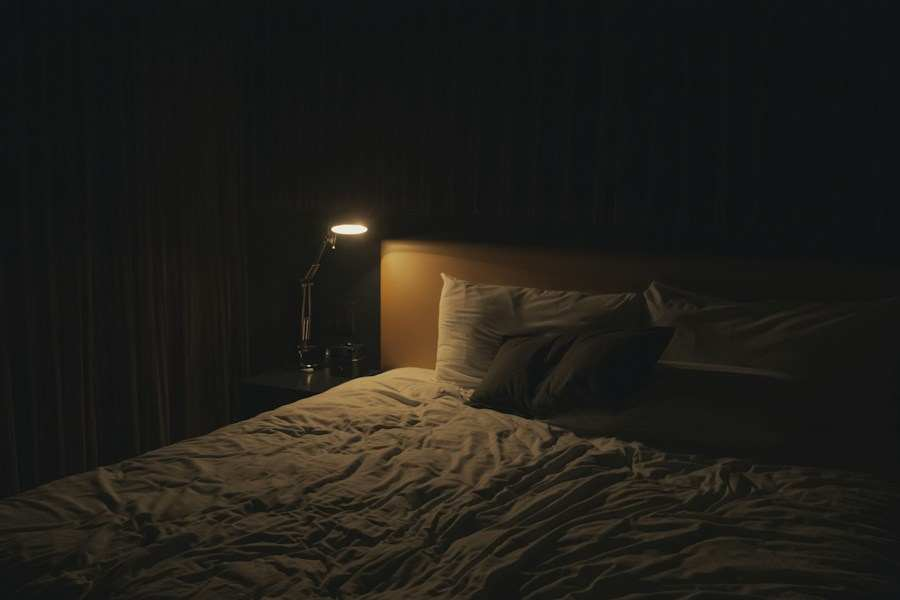
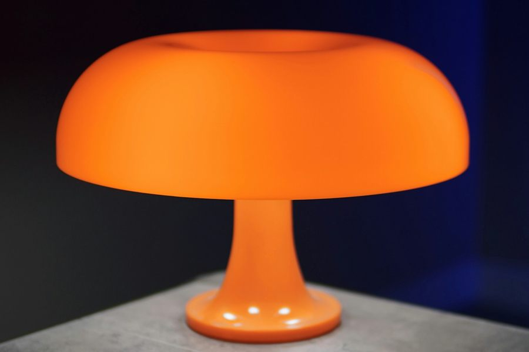

For most of us, the day starts with a jolt. A buzzing phone, a racing heart, a hand slapping snooze. Then twenty minutes of feeling like your brain is still loading.
Sleep researchers have a name for that foggy stretch: sleep inertia. And a growing number of people are fighting it with something surprisingly simple. Not coffee. Not a new app. Light.
What happens when the room brightens first
In a 2014 study, researchers asked eight people who struggled to wake up to sleep with a lamp that slowly brightened over the last 30 minutes before their alarm. Compared with a normal morning, they rated their sleep quality higher, felt more alert, and had faster reaction times after waking.1
A 2010 study with sixteen people found something similar: an artificial dawn left people feeling less sleepy and more "switched on" after waking, though it found no change in their test performance.2
"It's the difference between being shoved awake and being let in on it."
Both studies were small, so they're a promising start, not the final word. But the idea is easy to try: let the room wake up a little before you do.

A sunrise you can set
Real sunrise doesn't care about your 6:30 shift, and in winter it shows up long after you've left. That's the gap Solenne Rise was designed for: a light beside your bed that recreates dawn on your schedule.

Solenne Rise
- Sunrise
- 30 minutes, deep amber to soft daylight
- Sound
- Optional, plays after the light
- Night
- Sunset mode dims to dark
- Controls
- One dial, no app
- Fitting
- Wall mount or shelf stand
What kind of waker are you?
What early users say
Sample reviews written for this demo. Fictional brand, not real customers.
Sources
- Thompson A, Jones H, Gregson W, Atkinson G. Effects of dawn simulation on markers of sleep inertia and post-waking performance in humans. Eur J Appl Physiol. 2014;114(5):1049-56. PubMed 24509892
- Van De Werken M, Giménez MC, De Vries B, Beersma DG, Van Someren EJ, Gordijn MC. Effects of artificial dawn on sleep inertia, skin temperature, and the awakening cortisol response. J Sleep Res. 2010;19(3):425-35. PubMed 20408928
This is a paid advertorial. Slow Mornings may receive a commission from purchases made through links on this page. Solenne Rise is a lighting product, not a medical device, and is not intended to diagnose, treat or cure any condition. Individual results vary. Talk to a doctor about ongoing sleep problems.